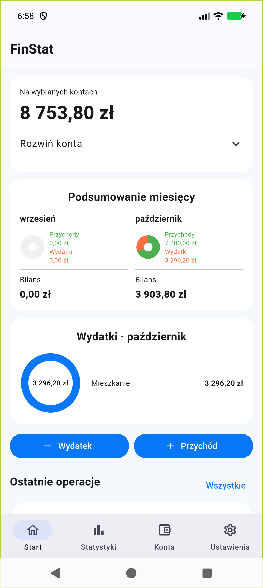

Przychody i wydatki
Kwota, konto, kategoria, data i opcjonalna notatka — tyle, ile potrzebujesz, bez zbędnych kroków.
 FinStat
FinStatFinanse osobiste · wersja testowa
FinStat pomaga ręcznie zapisywać przychody i wydatki, łączyć kilka kont oraz sprawdzać, dokąd naprawdę trafiają pieniądze — bez udostępniania aplikacji dostępu do banku.

Co porządkuje FinStat
Pierwsza wersja testowa obejmuje codzienne zapisy, analizę i planowanie. Dane pozostają lokalnie na urządzeniu.
Kwota, konto, kategoria, data i opcjonalna notatka — tyle, ile potrzebujesz, bez zbędnych kroków.
Konto osobiste, gotówka czy oszczędności w jednym widoku, z przelewami i korektą salda.
Kategorie, podkategorie i przypięte pozycje pomagają szybciej zapisywać codzienne operacje.
Miesięczne podsumowania, struktura wydatków i własne zestawienia pokazują fakty bez udawania doradcy.
Budżety kategorii, symulacja oszczędności i powtarzalne płatności pomagają patrzeć do przodu.
Bez obowiązkowego konta i połączenia z bankiem. Kopię danych możesz wyeksportować i przywrócić samodzielnie.
Aplikacja w praktyce
To rzeczywiste ekrany wersji testowej. Nazwa konta i wszystkie kwoty są wyłącznie danymi demonstracyjnymi.
Dlaczego FinStat
FinStat stawia na świadomy, ręczny zapis i czytelne podsumowanie. Bez dostępu do historii bankowej i bez automatycznych ocen — użytkownik decyduje, co zapisuje i jak chce to porównać.
Rozwój
Wersja 0.1.0 działa na Androidzie jako kompilacja testowa. Nie jest jeszcze publicznie dostępna ani gotowa do codziennego prowadzenia ważnych finansów.
Konta, operacje, kategorie, statystyki, limity, cykliczne płatności i kopia zapasowa pracują razem.
Sprawdzamy szybkość dodawania danych, widoki statystyk, powiadomienia i zachowanie na fizycznych urządzeniach.
Poprawki po testach, dostępność, polityka prywatności, podpis produkcyjny i materiały sklepu.
FAQ
Jeszcze nie publicznie. Działa pierwsza wersja testowa na Androida, ale projekt wymaga dalszych testów i dopracowania przed wydaniem.
Nie. Operacje wpisujesz ręcznie, a FinStat nie potrzebuje dostępu do banku.
Lokalnie na urządzeniu, bez obowiązkowego konta i chmury. Kopię zapasową można wyeksportować ręcznie.
Nie. Aplikacja porządkuje dane wpisane przez użytkownika i pokazuje obliczenia oraz porównania, ale nie zastępuje doradcy finansowego ani księgowości.
Pierwsza wersja testowa
Obserwuj Apscento albo napisz do nas, jeśli chcesz śledzić rozwój aplikacji.